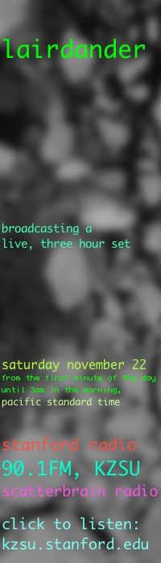
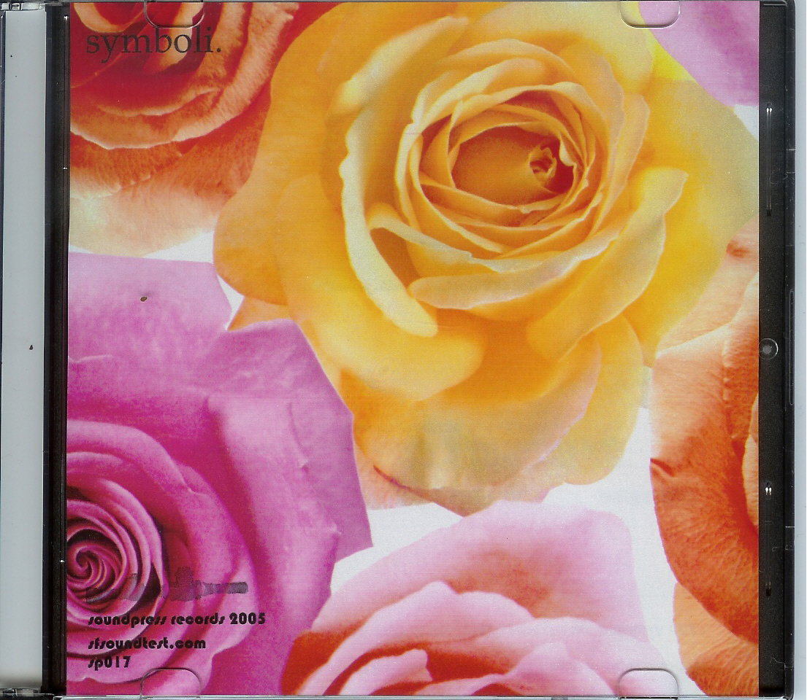
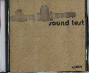
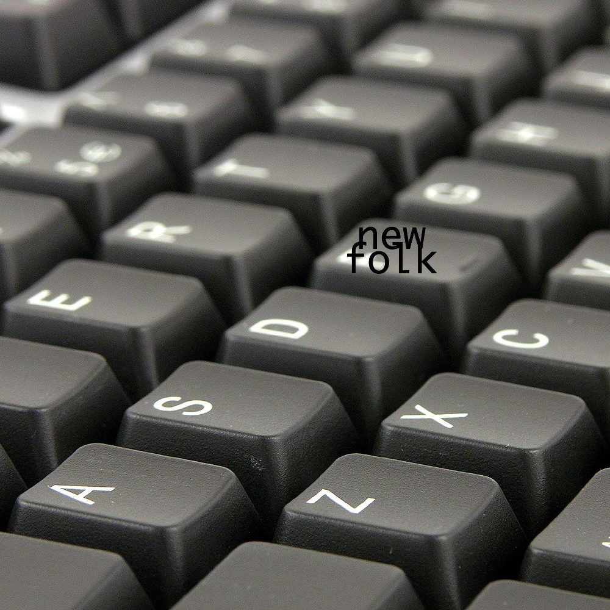
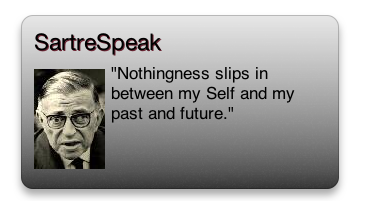
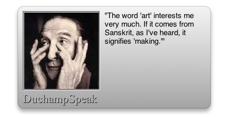

soundpress records
for more information: admin@bbjames.com,
last modified: january 30, 2010 © brian b. james

saturday, november 22, 2008, performing with lairdander from the first minute of the day until 3am in the morning pacific standard time, stanford radio, 90.1FM, KZSU, scatterbrain radio. kzsu.stanford.edu

thursday, march 6, 2008, 6:30, mills college signal flow,
opening night of signal flow sound-arts festival; installations, performances, electronics, acoustics.  thursday, october 25, 8:00, 2007, luggage store gallery, 1007 market st. san francisco, ca, lairdander / arc minute.
thursday, october 25, 8:00, 2007, luggage store gallery, 1007 market st. san francisco, ca, lairdander / arc minute.
wednesday, april 25, 2007, installations at 7PM show at 8PM, @ mills college concert hall: stranded, extra fine, electronic music by mills composers.
wednesday, december 6, 2006, 7:00 @ mills college: chris brown's computer music class, SuperCollider concert by mills students.
tuesday, december 5, 2006, 2:00-6:00 @ mills college: james fei's sound art class. sound art installations by mills students.
saturday, december 2, 2006, @ mills college: fred frith's MIE performance with maggie nicols from britain. also maggie nicols with joelle leandre and george lewis.
saturday, november 4, 2006, @ mills college: fred frith's MIE performance with david tudor resident olivia block.
tuesday, october 24, 2006 @ mills college: fred frith's MIE performance of tom philips' opera irma directed by gino robair.
wednesday, october 18, 2006, 8:00 @ mills ensemble room: james fei's sound art seminar performs john cage's cartridge music and david behrman's wavetrain.
thursday, july 20, 2006, 8:30 @ cafe du nord, sf: patrick abernethy (ex. beulah).
thursday, dec. 15, 2005, 8:30 @ edinburgh castle, 950 geary street @ polk, san francisco, ca. sound test, daniel martin-mccormick (ex. black eyes), corpus callosum, and the ish.
saturday, dec. 10, 2005, 7-11:30pm @ million fishes main gallery space, 2501 bryant st @ 23rd, sf, ca. million fishes show: mashup salon.
sunday, december 4, 2005, 4:00 @ The chrysalis new music studio, 275 clara st, between harrison and folsom, and fifth and sixth, in soma san francisco. performing with the chrysalis foundation ensemble.
saturday, december 3, 2005, 8:00 @ the chrysalis new music studio, 275 clara st, between harrison and folsom, and fifth and sixth, in soma san francisco. performing with the chrysalis foundation ensemble. playing works by cris forster on original acoustic instruments built by the composer.
thursday, nov. 10, 2005, 7:00, @ knuth hall, san francisco state university, creative arts bldg. 1600 holloway avenue, sf, ca. sound test will be performing john cage's variations I, orchestrated with his one, five, five, lecture on nothing, mesostic i, 0'00", and 0'00".
tuesday, nov. 8, 2005, 8:00, @ mama buzz cafe, 2318 telegraph ave @ 23rd oakland, ca, w/ daniel martin-mccormick (ex. black eyes).
thursday, sep. 29, 2005, 7:00 @ artists' television access, 992 valencia, sf, ca. playing john cage's five five times. with solo performance by daniel martin-mccormick (ex. black eyes).
sunday, august 21, 2005, 9:00 @ babylon, 4095 vine street, riverside, ca. sound test playing with four metal bands.
thursday, july 28, 2005, 8:00 @ artists' television access, 992 valencia street, san francisco, ca. sound test.

NSObject *pigMeat;. digital only lp. sp037. out soon.

seitan. brian b. james. ep. sp036. open in iTunes.

building a circuit into a big vat of refried beans: sound press records compilation one. various artists. 28 track digital full-length. sp035. open in iTunes.

lairdander. lairdander. ep. sp033. open in iTunes.

children's song. brian b. james. ep. sp023. open in iTunes.

symboli. symboli. ep. sp017. open in iTunes.

live at artists' television access, san francisco. sound test. cd. sp014. open in iTunes. recorded july 28, 2005 at san francisco's ata.

sine wave etudes. brian b. james. ep. sp012. out of print.

sp009. sound test. ep / cd. sp009. open in iTunes.

new folk. brian b. james. ep. sp008. out of print.
 BandGeek. A music theory calculator for the iPhone and iPod touch. Download
BandGeek. A music theory calculator for the iPhone and iPod touch. Download
BandGeek is a Music Theory Calculator for the iPhone and iPod touch. It allows Chord and Inversion calculation, Scale calculation, Diatonic Chord calculation, Pitch Class Set Interval Vector calculation, and Frequency and MIDI value calculation. It is the perfect tool for music theory students, composers, theorists, instrumentalists, performers, and anyone else needing quick music theory reference.

 SartreSpeak. Daily Quotes by Jean-Paul Sartre
SartreSpeak. Daily Quotes by Jean-Paul Sartre

Version 1.1, sp031
By Brian B. James
Released: March 23, 2007
Latest Build: March 23, 2007
.zip Filesize: 248 KB
Mac OS X 10.4 Tiger is required. If you’re using Safari, click the download link. When the widget download is complete, show Dashboard, click the Plus sign to display the Widget Bar and click the widget’s icon in the Widget Bar to open it. If you’re using a browser other than Safari, click the download link. When the widget download is complete, unarchive it and place it in /Library/Widgets/ in your home folder. show Dashboard, click the Plus sign to display the Widget Bar and click the widget’s icon in the Widget Bar to open it.
SartreSpeak is Freeware, © 2007 Brian B. James. Some code, © 2005 Apple Computer, Inc.
 DuchampSpeak. Daily Quotes by Artist Marcel Duchamp
DuchampSpeak. Daily Quotes by Artist Marcel Duchamp

Version 1.2, sp029
By Brian B. James
Released: February 26, 2007
Latest Build: March 22, 2007
.zip Filesize: 280 KB
Mac OS X 10.4 Tiger is required. If you’re using Safari, click the download link. When the widget download is complete, show Dashboard, click the Plus sign to display the Widget Bar and click the widget’s icon in the Widget Bar to open it. If you’re using a browser other than Safari, click the download link. When the widget download is complete, unarchive it and place it in /Library/Widgets/ in your home folder. show Dashboard, click the Plus sign to display the Widget Bar and click the widget’s icon in the Widget Bar to open it.
DuchampSpeak is Freeware, © 2007 Brian B. James. Some code, © 2005 Apple Computer, Inc.